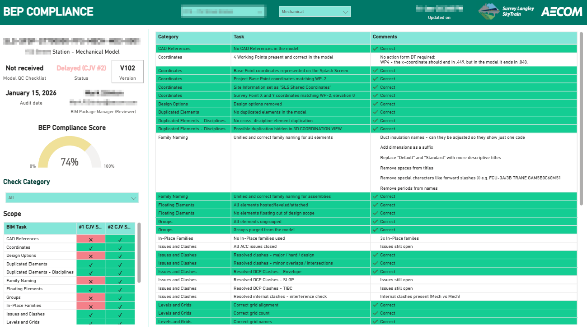
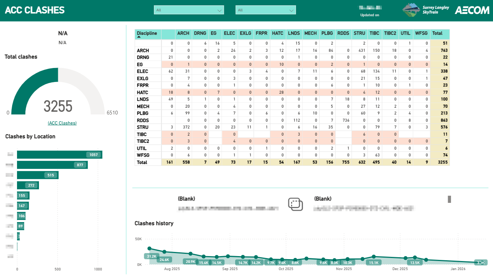
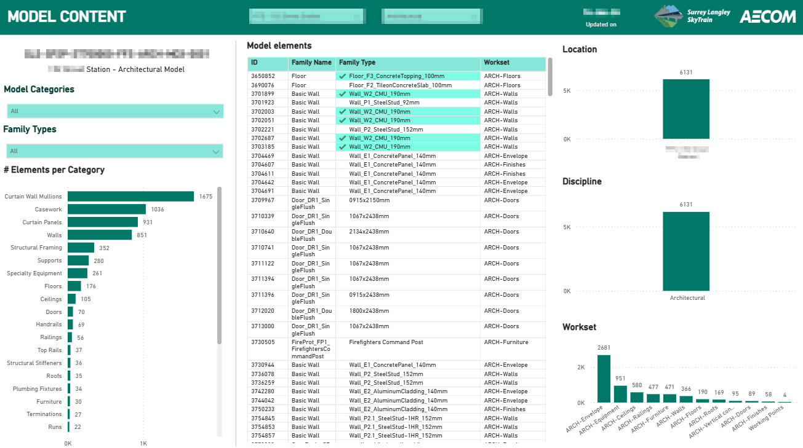
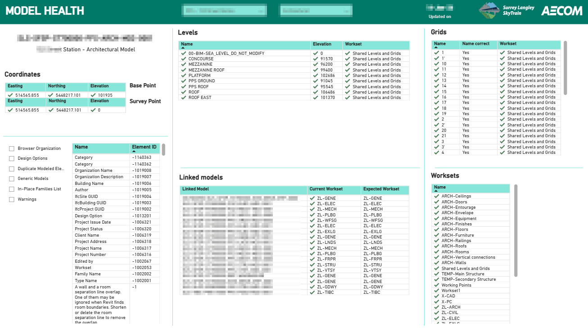

Challenge:
The project involved the delivery of 8 SkyTrain stations in Vancouver, with dozens of subcontractors across architecture, structures, civil, MEP, landscape, signalling, fire protection and more.
Although BIM standards were formally defined (BEP, MIDP, TIDP), they were applied inconsistently. Each organisation brought its own habits, naming conventions and modelling approaches. Information was fragmented, poorly standardised and often lost between tools and teams.
Technology existed, but processes were weak and people struggled to work in a truly digital way.
Idea:
Create a single, central source of truth that would continuously reflect the real BIM health of the project.
The solution had to work independently of human discipline, automate data flows as much as possible, and clearly compare expected versus actual information at object, model and project level.
Ideally, the tool would also act as a practical guide for less experienced engineers, showing not only what is wrong, but what the correct value should be.
Solution:
The BIM Performance Dashboard - an interactive Power BI report available to all project stakeholders.
Custom tools were developed to automatically extract and validate data from Revit and Civil 3D models on a weekly basis. Model content was checked against project requirements and compared directly with a master spreadsheet containing approved standards and values. Any deviation was immediately flagged and visualised.
In parallel, data from Autodesk Construction Cloud (used as the CDE) was automatically exported, including information containers, coordination issues, users and clashes. Using Power Automate, this data was pushed to SharePoint and connected live to the Power BI dashboard.
Why it mattered:
The dashboard transformed BIM from a static compliance exercise into a measurable, transparent performance system.
It significantly reduced coordination effort, exposed issues early, improved standard adoption across teams and created a shared understanding of what “good BIM” actually looks like on a complex, multi-disciplinary infrastructure project.






 Role: BIM Lead - Design (Stations)
Role: BIM Lead - Design (Stations) Role: BIM Manager
Role: BIM Manager Role: BIM Coordinator
Role: BIM Coordinator.jpg) Role: BIM Coordinator
Role: BIM Coordinator